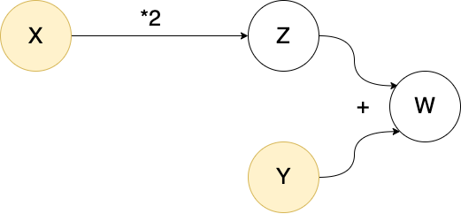
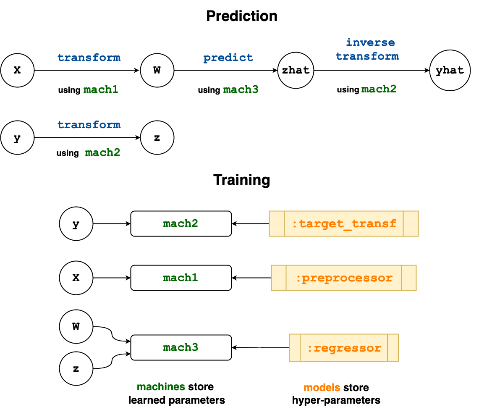

Learning Networks
Below is a practical guide to the MLJ implementation of learning networks, which have been described more abstractly in the article:
Learning networks, an advanced but powerful MLJ feature, are "blueprints" for combining models in flexible ways, beyond ordinary linear pipelines and simple model ensembles. They are simple transformations of your existing workflows which can be "exported" to define new, re-usable composite model types (models which typically have other models as hyperparameters).
Pipeline models (see Pipeline), and model stacks (see Stack) are both implemented internally as exported learning networks.
While learning networks can be used for complex machine learning workflows, their main purpose is for defining new stand-alone model types, which behave just like any other model type: Instances can be evaluated, tuned, inserted into pipelines, etc. In serious applications, users are encouraged to export their learning networks, as explained under Exporting a learning network as a new model type below, after testing the network, using a small training dataset.
Learning networks by example
Learning networks are best explained by way of example.
Lazy computation
The core idea of a learning network is delayed or lazy computation. Instead of
X = 4
Y = 3
Z = 2*X
W = Y + Z
W11we can do
using MLJ
X = source(4)
Y = source(3)
Z = 2*X
W = Y + Z
W()11In the first computation X, Y, Z and W are all bound to ordinary data. In the second, they are bound to objects called nodes. The special nodes X and Y constitute "entry points" for data, and are called source nodes. As the terminology suggests, we can imagine these objects as part of a "network" (a directed acyclic graph) which can aid conceptualization (but is less useful in more complicated examples):

The origin of a node
The source nodes on which a given node depends are called the origins of the node:
os = origins(W)2-element Vector{Source}:
Source @437 ⏎ `Count`
Source @853 ⏎ `Count`X in ostrueRe-using a network
The advantage of lazy evaluation is that we can change data at a source node to repeat the calculation with new data. One way to do this (discouraged in practice) is to use rebind!:
Z()8rebind!(X, 6) # demonstration only!
Z()12However, if a node has a unique origin, then one instead calls the node on the new data one would like to rebind to that origin:
origins(Z)1-element Vector{Source}:
Source @853 ⏎ `Count`Z(6)12Z(4)8This has the advantage that you don't need to locate the origin and rebind data directly, and the unique-origin restriction turns out to be sufficient for the applications to learning we have in mind.
Overloading functions for use on nodes
Several built-in function like * and + above are overloaded in MLJBase to work on nodes, as illustrated above. Others that work out-of-the-box include: MLJBase.matrix, MLJBase.table, vcat, hcat, mean, median, mode, first, last, as well as broadcasted versions of log, exp, mean, mode and median. A function like sqrt is not overloaded, so that Q = sqrt(Z) will throw an error. Instead, we do
Q = node(z->sqrt(z), Z)
Z()12Q()3.4641016151377544You can learn more about the node function under More on defining new nodes
A network that learns
To incorporate learning in a network of nodes MLJ:
Allows binding of machines to nodes instead of data
Generates "operation" nodes when calling an operation like
predictortransformon a machine and node input data. Such nodes point to both a machine (storing learned parameters) and the node from which to fetch data for applying the operation (which, unlike the nodes seen so far, depend on learned parameters to generate output).
For an example of a learning network that actually learns, we first synthesize some training data X, y, and production data Xnew:
using MLJ
X, y = make_blobs(cluster_std=10.0, rng=123) # `X` is a table, `y` a vector
Xnew, _ = make_blobs(3) # `Xnew` is a table with the same number of columnsWe choose a model do some dimension reduction, and another to perform classification:
pca = (@load PCA pkg=MultivariateStats verbosity=0)()
tree = (@load DecisionTreeClassifier pkg=DecisionTree verbosity=0)()To make our learning lazy, we wrap the training data as source nodes:
Xs = source(X)
ys = source(y)And, finally, proceed as we would in an ordinary MLJ workflow, with the exception that there is no need to fit! our machines, as training will be carried out lazily later:
mach1 = machine(pca, Xs)
x = transform(mach1, Xs) # defines a new node because `Xs` is a node
mach2 = machine(tree, x, ys)
yhat = predict(mach2, x) # defines a new node because `x` is a nodeNode @094 → DecisionTreeClassifier(…)
args:
1: Node @751 → PCA(…)
formula:
predict(
machine(DecisionTreeClassifier(max_depth = -1, …), …),
transform(
machine(PCA(maxoutdim = 0, …), …),
Source @159))Note that mach1 and mach2 are not themselves nodes. They point to the nodes they need to call to get training data and they are in turn pointed to by other nodes. In fact, an interesting implementation detail is that an "ordinary" machine is not actually bound directly to data, but bound to data wrapped in source nodes.
machine(pca, Xnew).args[1] # `Xnew` is ordinary dataSource @042 ⏎ `Table{AbstractVector{Continuous}}`Before calling a node, we need to fit! the node, to trigger training of all the machines on which it depends:
julia> fit!(yhat) # can include same keyword options for `fit!(::Machine, ...)`[ Info: Training machine(PCA(maxoutdim = 0, …), …). [ Info: Training machine(DecisionTreeClassifier(max_depth = -1, …), …). Node @094 → DecisionTreeClassifier(…) args: 1: Node @751 → PCA(…) formula: predict( machine(DecisionTreeClassifier(max_depth = -1, …), …), transform( machine(PCA(maxoutdim = 0, …), …), Source @159))julia> yhat()[1:2] # or `yhat(rows=2)`2-element UnivariateFiniteVector{Multiclass{3}, Int64, UInt32, Float64}: UnivariateFinite{Multiclass{3}}(1=>1.0, 2=>0.0, 3=>0.0) UnivariateFinite{Multiclass{3}}(1=>1.0, 2=>0.0, 3=>0.0)
This last represents the prediction on the training data, because that's what resides at our source nodes. However, yhat has the unique origin X (because "training edges" in the complete associated directed graph are excluded for this purpose). We can therefore call yhat on our production data to get the corresponding predictions:
yhat(Xnew)3-element UnivariateFiniteVector{Multiclass{3}, Int64, UInt32, Float64}:
UnivariateFinite{Multiclass{3}}(1=>0.0, 2=>0.0, 3=>1.0)
UnivariateFinite{Multiclass{3}}(1=>0.0, 2=>0.0, 3=>1.0)
UnivariateFinite{Multiclass{3}}(1=>1.0, 2=>0.0, 3=>0.0)Training is smart, in the sense that mutating a hyper-parameter of some component model does not force retraining of upstream machines:
julia> tree.max_depth = 11julia> fit!(yhat)[ Info: Not retraining machine(PCA(maxoutdim = 0, …), …). Use `force=true` to force. [ Info: Updating machine(DecisionTreeClassifier(max_depth = 1, …), …). Node @094 → DecisionTreeClassifier(…) args: 1: Node @751 → PCA(…) formula: predict( machine(DecisionTreeClassifier(max_depth = 1, …), …), transform( machine(PCA(maxoutdim = 0, …), …), Source @159))julia> yhat(Xnew)3-element UnivariateFiniteVector{Multiclass{3}, Int64, UInt32, Float64}: UnivariateFinite{Multiclass{3}}(1=>0.357, 2=>0.4, 3=>0.243) UnivariateFinite{Multiclass{3}}(1=>0.357, 2=>0.4, 3=>0.243) UnivariateFinite{Multiclass{3}}(1=>0.357, 2=>0.4, 3=>0.243)
Multithreaded training
A more complicated learning network may contain machines that can be trained in parallel. In that case, a call like the following may speed up training:
tree.max_depth=2
fit!(yhat, acceleration=CPUThreads())[ Info: Not retraining machine(PCA(maxoutdim = 0, …), …). Use `force=true` to force.
[ Info: Updating machine(DecisionTreeClassifier(max_depth = 2, …), …).Currently, only CPU1() (default) and CPUThreads() are supported here.
Exporting a learning network as a new model type
Once a learning network has been tested, typically on some small dummy data set, it is ready to be exported as a new, stand-alone, re-usable model type (unattached to any data). We demonstrate the process by way of examples of increasing complexity:
- Example A - Mini-pipeline
- More on replacing models with symbols
- Example B - Multiple operations: transform and inverse transform
- Example C - Blending predictions and exposing internal network state in reports
- Example D - Multiple nodes pointing to the same machine
- Example E - Coupling component model hyper-parameters
- More on defining new nodes
- Example F - Wrapping a model in a data-dependent tuning strategy
Example A - Mini-pipeline
First we export the simple learning network defined above. (This is for illustration purposes; in practice using the Pipeline syntax model1 |> model2 syntax is more convenient.)
Step 1 - Define a new model struct
We need a type with two fields, one for the preprocessor (pca in the network above) and one for the classifier (tree in the network above).
The DecisionTreeClassifier type of tree has supertype Probabilistic, because it makes probabilistic predictions, and we assume any other classifier we want to swap out will be the same.
supertype(typeof(tree))ProbabilisticIn particular, our composite model will also need Probabilistic as supertype. In fact, we must give it the intermediate supertype ProbabilisticNetworkComposite <: Probabilistic, so that we additionally flag it as an exported learning network model type:
mutable struct CompositeA <: ProbabilisticNetworkComposite
preprocessor
classifier
endThe common alternatives are DeterministicNetworkComposite and UnsupervisedNetworkComposite. But all options can be viewed as follows:
using MLJBase
NetworkCompositeNetworkComposite (alias for Union{AnnotatorNetworkComposite, DeterministicNetworkComposite, DeterministicSupervisedDetectorNetworkComposite, DeterministicUnsupervisedDetectorNetworkComposite, IntervalNetworkComposite, JointProbabilisticNetworkComposite, ProbabilisticNetworkComposite, ProbabilisticSetNetworkComposite, ProbabilisticSupervisedDetectorNetworkComposite, ProbabilisticUnsupervisedDetectorNetworkComposite, StaticNetworkComposite, SupervisedAnnotatorNetworkComposite, SupervisedDetectorNetworkComposite, SupervisedNetworkComposite, UnsupervisedAnnotatorNetworkComposite, UnsupervisedDetectorNetworkComposite, UnsupervisedNetworkComposite})We next make our learning network model-generic by substituting each model instance with the corresponding symbol representing a property (field) of the new model struct:
mach1 = machine(:preprocessor, Xs) # <---- `pca` swapped out for `:preprocessor`
x = transform(mach1, Xs)
mach2 = machine(:classifier, x, ys) # <---- `tree` swapped out for `:classifier`
yhat = predict(mach2, x)Node @413 → :classifier
args:
1: Node @455 → :preprocessor
formula:
predict(
machine(:classifier, …),
transform(
machine(:preprocessor, …),
Source @159))Incidentally, this network can be used as before except we must provide an instance of CompositeA in our fit! calls, to indicate what actual models the symbols are being substituted with:
composite_a = CompositeA(pca, ConstantClassifier())
fit!(yhat, composite=composite_a)
yhat(Xnew)3-element UnivariateFiniteVector{Multiclass{3}, Int64, UInt32, Float64}:
UnivariateFinite{Multiclass{3}}(1=>0.33, 2=>0.33, 3=>0.34)
UnivariateFinite{Multiclass{3}}(1=>0.33, 2=>0.33, 3=>0.34)
UnivariateFinite{Multiclass{3}}(1=>0.33, 2=>0.33, 3=>0.34)In this case :preprocessor is being substituted by pca, and :classifier by ConstantClassifier() for training.
Step 2 - Wrap the learning network in prefit
Literally copy and paste the learning network above into the definition of a method called prefit, as shown below (if you have implemented your own MLJ model, you will notice this has the same signature as MLJModelInterface.fit):
import MLJBase
function MLJBase.prefit(composite::CompositeA, verbosity, X, y)
# the learning network from above:
Xs = source(X)
ys = source(y)
mach1 = machine(:preprocessor, Xs)
x = transform(mach1, Xs)
mach2 = machine(:classifier, x, ys)
yhat = predict(mach2, x)
verbosity > 0 && @info "I'm a noisy fellow!"
# return "learning network interface":
return (; predict=yhat)
endThat's it.
Generally, prefit always returns a learning network interface; see MLJBase.prefit for what this means in general. In this example, the interface dictates that calling predict(mach, Xnew) on a machine mach bound to some instance of CompositeA should internally call yhat(Xnew).
Here's our new composite model type CompositeA in action, combining standardization with KNN classification:
using MLJ
X, y = @load_iris
knn = (@load KNNClassifier pkg=NearestNeighborModels verbosity=0)()
composite_a = CompositeA(Standardizer(), knn)CompositeA(
preprocessor = Standardizer(
features = Symbol[],
ignore = false,
ordered_factor = false,
count = false),
classifier = KNNClassifier(
K = 5,
algorithm = :kdtree,
metric = Distances.Euclidean(0.0),
leafsize = 10,
reorder = true,
weights = NearestNeighborModels.Uniform()))mach = machine(composite_a, X, y) |> fit!
predict(mach, X)[1:2]2-element UnivariateFiniteVector{Multiclass{3}, String, UInt32, Float64}:
UnivariateFinite{Multiclass{3}}(setosa=>1.0, versicolor=>0.0, virginica=>0.0)
UnivariateFinite{Multiclass{3}}(setosa=>1.0, versicolor=>0.0, virginica=>0.0)report(mach).preprocessor(features_fit = [:sepal_length, :petal_width, :petal_length, :sepal_width],)fitted_params(mach).classifier(tree = NearestNeighbors.KDTree{StaticArraysCore.SVector{4, Float64}, Distances.Euclidean, Float64, StaticArraysCore.SVector{4, Float64}}
Number of points: 150
Dimensions: 4
Metric: Distances.Euclidean(0.0)
Reordered: true,)More on replacing models with symbols
Only the first argument model in some expression machine(model, ...) can be replaced with a symbol. These replacements function as hooks for exposing reports and fitted parameters of component models in the report and fitted parameters of the composite model, but these replacements are not absolutely necessary. For example, instead of the line mach1 = machine(:preprocessor, Xs) in the prefit definition, we can do mach1 = machine(composite.preprocessor, Xs). However, report and fittted_params will not include items for the :preprocessor component model in that case.
If a component model is not explicitly bound to data in a machine (for example, because it is first wrapped in TunedModel) then there are ways to explicitly expose associated fitted parameters or report items. See Example F below.
Example B - Multiple operations: transform and inverse transform
Here's a second mini-pipeline example composing two transformers which both implement inverse transform. We show how to implement an inverse_transform for the composite model too.
Step 1 - Define a new model struct
using MLJ
import MLJBase
mutable struct CompositeB <: DeterministicNetworkComposite
transformer1
transformer2
endStep 2 - Wrap the learning network in prefit
function MLJBase.prefit(composite::CompositeB, verbosity, X)
Xs = source(X)
mach1 = machine(:transformer1, Xs)
X1 = transform(mach1, Xs)
mach2 = machine(:transformer2, X1)
X2 = transform(mach2, X1)
W1 = inverse_transform(mach2, Xs)
W2 = inverse_transform(mach1, W1)
# the learning network interface:
return (; transform=X2, inverse_transform=W2)
endHere's a demonstration:
X = rand(100)
composite_b = CompositeB(UnivariateBoxCoxTransformer(), Standardizer())
mach = machine(composite_b, X) |> fit!
W = transform(mach, X)
@assert inverse_transform(mach, W) ≈ XExample C - Blending predictions and exposing internal network state in reports
The code below defines a new composite model type CompositeC that predicts by taking the weighted average of two regressors, and additionally exposes, in the model's report, a measure of disagreement between the two models at time of training. In addition to the two regressors, the new model has two other fields:
mix, controlling the weightingacceleration, for the mode of acceleration for training the model (e.g.,CPUThreads()).
Step 1 - Define a new model struct
using MLJ
import MLJBase
mutable struct CompositeC <: DeterministicNetworkComposite
regressor1
regressor2
mix::Float64
acceleration
endStep 2 - Wrap the learning network in prefit
function MLJBase.prefit(composite::CompositeC, verbosity, X, y)
Xs = source(X)
ys = source(y)
mach1 = machine(:regressor1, Xs, ys)
mach2 = machine(:regressor2, Xs, ys)
yhat1 = predict(mach1, Xs)
yhat2 = predict(mach2, Xs)
# node to return disagreement between the regressor predictions:
disagreement = node((y1, y2) -> l2(y1, y2) |> mean, yhat1, yhat2)
# get the weighted average the predictions of the regressors:
λ = composite.mix
yhat = (1 - λ)*yhat1 + λ*yhat2
# the learning network interface:
return (
predict = yhat,
report= (; training_disagreement=disagreement),
acceleration = composite.acceleration,
)
endHere's a demonstration:
X, y = make_regression() # a table and a vector
knn = (@load KNNRegressor pkg=NearestNeighborModels verbosity=0)()
tree = (@load DecisionTreeRegressor pkg=DecisionTree verbosity=0)()
composite_c = CompositeC(knn, tree, 0.2, CPUThreads())
mach = machine(composite_c, X, y) |> fit!
Xnew, _ = make_regression(3)
predict(mach, Xnew)3-element Vector{Float64}:
-0.7029764091986238
-0.7553231974592023
-0.6270125193923791report(mach)(regressor2 = (features = [:x1, :x2],),
training_disagreement = 0.0027608495393292233,
predict = (regressor2 = (features = [:x1, :x2],),),)Example D - Multiple nodes pointing to the same machine
When incorporating learned target transformations (such as a standardization) in supervised learning, it is desirable to apply the inverse transformation to predictions, to return them to the original scale. This means re-using learned parameters from an earlier part of your workflow. This poses no problem here, as the next example demonstrates.
The model type CompositeD defined below applies a preprocessing transformation to input data X (e.g., standardization), learns a transformation for the target y (e.g., an optimal Box-Cox transformation), predicts new target values using a regressor (e.g., Ridge regression), and then inverse-transforms those predictions to restore them to the original scale. (This represents a model we could alternatively build using the TransformedTargetModel wrapper and a Pipeline.)
Step 1 - Define a new model struct
using MLJ
import MLJBase
mutable struct CompositeD <: DeterministicNetworkComposite
preprocessor
target_transformer
regressor
acceleration
endStep 2 - Wrap the learning network in prefit
Notice that both of the nodes z and yhat in the wrapped learning network point to the same machine (learned parameters) mach2.
function MLJBase.prefit(composite::CompositeD, verbosity, X, y)
Xs = source(X)
ys = source(y)
mach1 = machine(:preprocessor, Xs)
W = transform(mach1, Xs)
mach2 = machine(:target_transformer, ys)
z = transform(mach2, ys)
mach3 =machine(:regressor, W, z)
zhat = predict(mach3, W)
yhat = inverse_transform(mach2, zhat)
# the learning network interface:
return (
predict = yhat,
acceleration = composite.acceleration,
)
endThe flow of information in the wrapped learning network is visualized below.

Here's an application of our new composite to the Boston dataset:
X, y = @load_boston
stand = Standardizer()
box = UnivariateBoxCoxTransformer()
ridge = (@load RidgeRegressor pkg=MultivariateStats verbosity=0)(lambda=92)
composite_d = CompositeD(stand, box, ridge, CPU1())
evaluate(composite_d, X, y, resampling=CV(nfolds=5), measure=l2, verbosity=0)PerformanceEvaluation object with these fields:
model, measure, operation, measurement, per_fold,
per_observation, fitted_params_per_fold,
report_per_fold, train_test_rows, resampling, repeats
Extract:
┌──────────┬───────────┬─────────────┬─────────┬────────────────────────────────
│ measure │ operation │ measurement │ 1.96*SE │ per_fold ⋯
├──────────┼───────────┼─────────────┼─────────┼────────────────────────────────
│ LPLoss( │ predict │ 27.9 │ 20.0 │ [9.26, 23.1, 33.6, 60.4, 13.4 ⋯
│ p = 2) │ │ │ │ ⋯
└──────────┴───────────┴─────────────┴─────────┴────────────────────────────────
1 column omitted
Example E - Coupling component model hyper-parameters
The composite model in this example combines a clustering model used to reduce the dimension of the feature space (KMeans or KMedoids from Clustering.jl) with ridge regression, but has the following "coupling" of the hyperparameters: The amount of ridge regularization depends on the number of specified clusters k, with less regularization for a greater number of clusters. It includes a user-specified coupling coefficient c, and exposes the solver hyper-parameter of the ridge regressor. (Neither the clusterer nor ridge regressor are themselves hyperparameters of the composite.)
Step 1 - Define a new model struct
using MLJ
import MLJBase
mutable struct CompositeE <: DeterministicNetworkComposite
clusterer # `:kmeans` or `:kmedoids`
k::Int # number of clusters
solver # a ridge regression parameter we want to expose
c::Float64 # a "coupling" coefficient
endStep 2 - Wrap the learning network in prefit
RidgeRegressor = @load RidgeRegressor pkg=MLJLinearModels verbosity=0
KMeans = @load KMeans pkg=Clustering verbosity=0
KMedoids = @load KMedoids pkg=Clustering verbosity=0
function MLJBase.prefit(composite::CompositeE, verbosity, X, y)
Xs = source(X)
ys = source(y)
k = composite.k
solver = composite.solver
c = composite.c
clusterer = composite.clusterer == :kmeans ? KMeans(; k) : KMedoids(; k)
mach1 = machine(clusterer, Xs)
Xsmall = transform(mach1, Xs)
# the coupling - ridge regularization depends on the number of
# clusters `k` and the coupling coefficient `c`:
lambda = exp(-c/k)
ridge = RidgeRegressor(; lambda, solver)
mach2 = machine(ridge, Xsmall, ys)
yhat = predict(mach2, Xsmall)
return (predict=yhat,)
endHere's an application to the Boston dataset in which we optimize the coupling coefficient (see Tuning Models for more on hyper-parameter optimization):
X, y = @load_boston # a table and a vector
composite_e = CompositeE(:kmeans, 3, nothing, 0.5)
r = range(composite_e, :c, lower = -2, upper=2, scale=x->10^x)
tuned_composite_e = TunedModel(
composite_e,
range=r,
tuning=RandomSearch(rng=123),
measure=l2,
resampling=CV(nfolds=6),
n=100,
)
mach = machine(tuned_composite_e, X, y) |> fit!
report(mach).best_modelCompositeE(
clusterer = :kmeans,
k = 3,
solver = nothing,
c = 0.14720178188876742)More on defining new nodes
Overloading ordinary functions for nodes has already been discussed above. Here's another example:
divide(x, y) = x/y
X = source(2)
Y = source(3)
Z = node(divide, X, Y)This means Z() returns divide(X(), Y()), which is divide(2, 3) in this case:
Z()0.6666666666666666We cannot call Z with arguments (e.g., Z(2)) because it does not have a unique origin.
In all the node examples so far, the first argument of node is a function, and all other arguments are nodes - one node for each argument of the function. A node constructed in this way is called a static node. A dynamic node, which directly depends on the outcome of a training event, is constructed by giving a machine as the second argument, to be passed as the first argument of the function in a node call. For example, we can do
Xs = source(rand(4))
mach = machine(Standardizer(), Xs)
N = node(transform, mach, Xs) |> fit![ Info: Training machine(Standardizer(features = Symbol[], …), …).Then N has the following calling properties:
N()returnstransform(mach, Xs())N(Xnew)returnstransform(mach, Xs(Xnew)); hereXs(Xnew)is justXnewbecauseXsis just a source node.)
N()4-element Vector{Float64}:
0.3097277718673464
-1.4244083620630208
0.20105872362694022
0.9136218665687336N(rand(2))2-element Vector{Float64}:
0.6707127594719003
-0.8770485483419167In fact, this is precisely how the transform method is internally overloaded to work, when called with a node argument (to return a node instead of data). That is, internally there exists code that amounts to the definition
transform(mach, X::AbstractNode) = node(transform, mach, X)Here AbstractNode is the common super-type of Node and Source.
It sometimes useful to create dynamic nodes with no node arguments, as in
Xs = source(rand(10))
mach = machine(Standardizer(), Xs)
N = node(fitted_params, mach) |> fit!
N()(mean = 0.46023189664355446,
std = 0.3287060402337959,)Static nodes can have also have zero node arguments. These may be viewed as "constant" nodes:
N = Node(()-> 42)
N()42Example F below demonstrates the use of static and dynamic nodes. For more details, see the node docstring.
There is also an experimental macro @node. If Z is an AbstractNode (Z = source(16), say) then instead of
Q = node(z->sqrt(z), Z)one can do
Q = @node sqrt(Z)(so that Q() == 4). Here's a more complicated application of @node to row-shuffle a table:
using Random
X = (x1 = [1, 2, 3, 4, 5],
x2 = [:one, :two, :three, :four, :five])
rows(X) = 1:nrows(X)
Xs = source(X)
rs = @node rows(Xs)
W = @node selectrows(Xs, @node shuffle(rs))
julia> W()
(x1 = [5, 1, 3, 2, 4],
x2 = Symbol[:five, :one, :three, :two, :four],)
Important. An argument not in global scope is assumed by @node to be a node or source.
Example F - Wrapping a model in a data-dependent tuning strategy
When the regularization parameter of a Lasso model is optimized, one commonly searches over a parameter range depending on properties of the training data. Indeed, Lasso (and, more generally, elastic net) implementations commonly provide a method to carry out this data-dependent optimization automatically, using cross-validation. The following example shows how to transform the LassoRegressor model type from MLJLinearModels.jl into a self-tuning model type LassoCVRegressor using the commonly implemented data-dependent tuning strategy. A new dimensionless hyperparameter epsilon controls the lower bound on the parameter range.
Step 1 - Define a new model struct
using MLJ
import MLJBase
mutable struct LassoCVRegressor <: DeterministicNetworkComposite
lasso # the atomic lasso model (`lasso.lambda` is ignored)
epsilon::Float64 # controls lower bound of `lasso.lambda` in tuning
resampling # resampling strategy for optimization of `lambda`
end
# keyword constructor for convenience:
LassoRegressor = @load LassoRegressor pkg=MLJLinearModels verbosity=0
LassoCVRegressor(;
lasso=LassoRegressor(),
epsilon=0.001,
resampling=CV(nfolds=6),
) = LassoCVRegressor(
lasso,
epsilon,
resampling,
)Step 2 - Wrap the learning network in prefit
In this case, there is no model -> :symbol replacement that makes sense here, because the model is getting wrapped by TunedModel before being bound to nodes in a machine. However, we can expose the the learned lasso coefs and intercept using fitted parameter nodes; and expose the optimal lambda, and range searched, using report nodes (as previously demonstrated in Example C).
function MLJBase.prefit(composite::LassoCVRegressor, verbosity, X, y)
λ_max = maximum(abs.(MLJ.matrix(X)'y))
Xs = source(X)
ys = source(y)
r = range(
composite.lasso,
:lambda,
lower=composite.epsilon*λ_max,
upper=λ_max,
scale=:log10,
)
lambda_range = node(()->r) # a "constant" report node
tuned_lasso = TunedModel(
composite.lasso,
tuning=Grid(shuffle=false),
range = r,
measure = l2,
resampling=composite.resampling,
)
mach = machine(tuned_lasso, Xs, ys)
R = node(report, mach) # `R()` returns `report(mach)`
lambda = node(r -> r.best_model.lambda, R) # a report node
F = node(fitted_params, mach) # `F()` returns `fitted_params(mach)`
coefs = node(f->f.best_fitted_params.coefs, F) # a fitted params node
intercept = node(f->f.best_fitted_params.intercept, F) # a fitted params node
yhat = predict(mach, Xs)
return (
predict=yhat,
fitted_params=(; coefs, intercept),
report=(; lambda, lambda_range),
)
endHere's a demonstration:
X, _ = make_regression(1000, 3, rng=123)
y = X.x2 - X.x2 + 0.005*X.x3 + 0.05*rand(1000)
lasso_cv = LassoCVRegressor(epsilon=1e-5)
mach = machine(lasso_cv, X, y) |> fit!
report(mach)(lambda = 0.00042546886155141466,
lambda_range = NumericRange(3.294e-5 ≤ lambda ≤ 3.294; origin=1.647, unit=1.647; on log10 scale),)fitted_params(mach)(coefs = [:x1 => 0.0, :x2 => -0.0, :x3 => 0.004147704827722941],
intercept = 0.02486029602840344,)The learning network API
Two new julia types are part of learning networks: Source and Node, which share a common abstract supertype AbstractNode.
Formally, a learning network defines two labeled directed acyclic graphs (DAG's) whose nodes are Node or Source objects, and whose labels are Machine objects. We obtain the first DAG from directed edges of the form $N1 -> N2$ whenever $N1$ is an argument of $N2$ (see below). Only this DAG is relevant when calling a node, as discussed in the examples above and below. To form the second DAG (relevant when calling or calling fit! on a node) one adds edges for which $N1$ is training argument of the machine which labels $N1$. We call the second, larger DAG, the completed learning network (but note only edges of the smaller network are explicitly drawn in diagrams, for simplicity).
Source nodes
Only source nodes can reference concrete data. A Source object has a single field, data.
MLJBase.Source — TypeSourceType for a learning network source node. Constructed using source, as in source() or source(rand(2,3)).
MLJBase.source — MethodXs = source(X=nothing)Define, a learning network Source object, wrapping some input data X, which can be nothing for purposes of exporting the network as stand-alone model. For training and testing the unexported network, appropriate vectors, tables, or other data containers are expected.
The calling behaviour of a Source object is this:
Xs() = X
Xs(rows=r) = selectrows(X, r) # eg, X[r,:] for a DataFrame
Xs(Xnew) = XnewSee also: MLJBase.prefit, sources, origins, node.
MLJBase.rebind! — Functionrebind!(s, X)Attach new data X to an existing source node s. Not a public method.
MLJBase.sources — Functionsources(N::AbstractNode)A vector of all sources referenced by calls N() and fit!(N). These are the sources of the ancestor graph of N when including training edges.
Not to be confused with origins(N), in which training edges are excluded.
MLJBase.origins — Functionorigins(N)Return a list of all origins of a node N accessed by a call N(). These are the source nodes of ancestor graph of N if edges corresponding to training arguments are excluded. A Node object cannot be called on new data unless it has a unique origin.
Not to be confused with sources(N) which refers to the same graph but without the training edge deletions.
Nodes
MLJBase.Node — TypeNode{T<:Union{Machine,Nothing}}Type for nodes in a learning network that are not Source nodes.
The key components of a Node are:
An operation, which will either be static (a fixed function) or dynamic (such as
predictortransform).A
Machineobject, on which to dispatch the operation (nothingif the operation is static). The training arguments of the machine are generally other nodes, includingSourcenodes.Upstream connections to other nodes, called its arguments, possibly including
Sourcenodes, one for each data argument of the operation (typically there's just one).
When a node N is called, as in N(), it applies the operation on the machine (if there is one) together with the outcome of calls to its node arguments, to compute the return value. For details on a node's calling behavior, see node.
MLJBase.node — FunctionJ = node(f, mach::Machine, args...)Defines a dynamic Node object J wrapping a dynamic operation f (predict, predict_mean, transform, etc), a nodal machine mach and arguments args. Its calling behaviour, which depends on the outcome of training mach (and, implicitly, on training outcomes affecting its arguments) is this:
J() = f(mach, args[1](), args[2](), ..., args[n]())
J(rows=r) = f(mach, args[1](rows=r), args[2](rows=r), ..., args[n](rows=r))
J(X) = f(mach, args[1](X), args[2](X), ..., args[n](X))Generally n=1 or n=2 in this latter case.
predict(mach, X::AbsractNode, y::AbstractNode)
predict_mean(mach, X::AbstractNode, y::AbstractNode)
predict_median(mach, X::AbstractNode, y::AbstractNode)
predict_mode(mach, X::AbstractNode, y::AbstractNode)
transform(mach, X::AbstractNode)
inverse_transform(mach, X::AbstractNode)Shortcuts for J = node(predict, mach, X, y), etc.
Calling a node is a recursive operation which terminates in the call to a source node (or nodes). Calling nodes on new data X fails unless the number of such nodes is one.
MLJBase.@node — Macro@node f(...)Construct a new node that applies the function f to some combination of nodes, sources and other arguments.
Important. An argument not in global scope is assumed to be a node or source.
Examples
X = source(π)
W = @node sin(X)
julia> W()
0
X = source(1:10)
Y = @node selectrows(X, 3:4)
julia> Y()
3:4
julia> Y(["one", "two", "three", "four"])
2-element Array{Symbol,1}:
"three"
"four"
X1 = source(4)
X2 = source(5)
add(a, b, c) = a + b + c
N = @node add(X1, 1, X2)
julia> N()
10
See also node
MLJBase.prefit — FunctionMLJBase.prefit(model, verbosity, data...)Returns a learning network interface (see below) for a learning network with source nodes that wrap data.
A user overloads MLJBase.prefit when exporting a learning network as a new stand-alone model type, of which model above will be an instance. See the MLJ reference manual for details.
A learning network interface is a named tuple declaring certain interface points in a learning network, to be used when "exporting" the network as a new stand-alone model type. Examples are
(predict=yhat,)
(transform=Xsmall, acceleration=CPUThreads())
(predict=yhat, transform=W, report=(loss=loss_node,))Here yhat, Xsmall, W and loss_node are nodes in the network.
The keys of the learning network interface always one of the following:
The name of an operation, such as
:predict,:predict_mode,:transform,:inverse_transform. See "Operation keys" below.:report, for exposing results of calling a node with no arguments in the composite model report. See "Including report nodes" below.:fitted_params, for exposing results of calling a node with no arguments as fitted parameters of the composite model. See "Including fitted parameter nodes" below.:acceleration, for articulating acceleration mode for training the network, e.g.,CPUThreads(). Corresponding value must be anAbstractResource. If not included,CPU1()is used.
Operation keys
If the key is an operation, then the value must be a node n in the network with a unique origin (length(origins(n)) === 1). The intention of a declaration such as predict=yhat is that the exported model type implements predict, which, when applied to new data Xnew, should return yhat(Xnew).
Including report nodes
If the key is :report, then the corresponding value must be a named tuple
(k1=n1, k2=n2, ...)whose values are all nodes. For each k=n pair, the key k will appear as a key in the composite model report, with a corresponding value of deepcopy(n()), called immediatately after training or updating the network. For examples, refer to the "Learning Networks" section of the MLJ manual.
Including fitted parameter nodes
If the key is :fitted_params, then the behaviour is as for report nodes but results are exposed as fitted parameters of the composite model instead of the report.